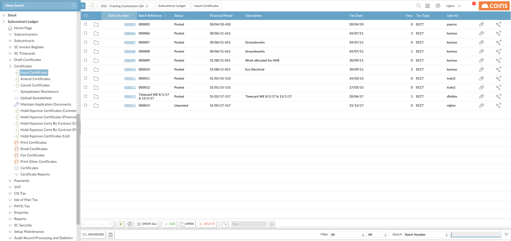
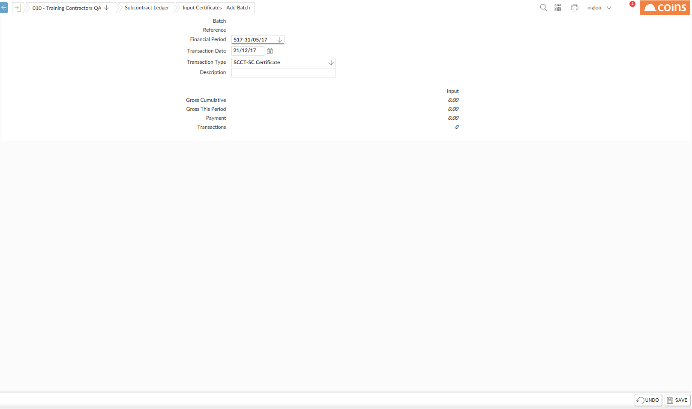
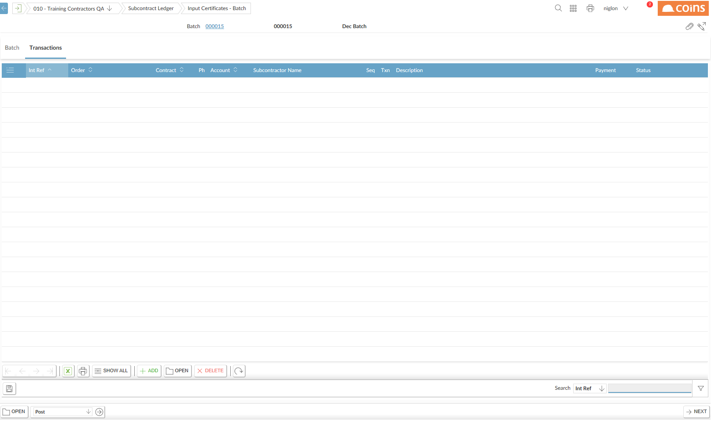
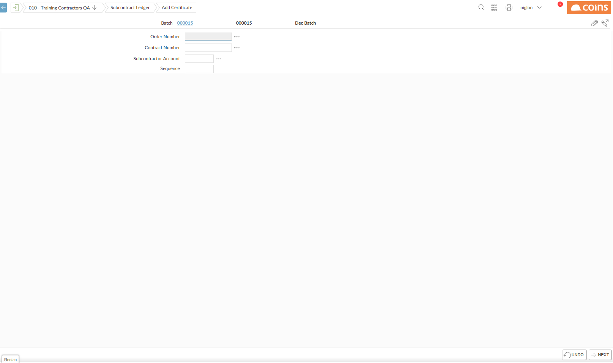
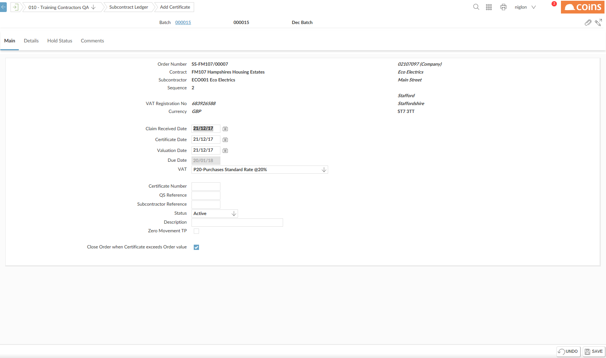
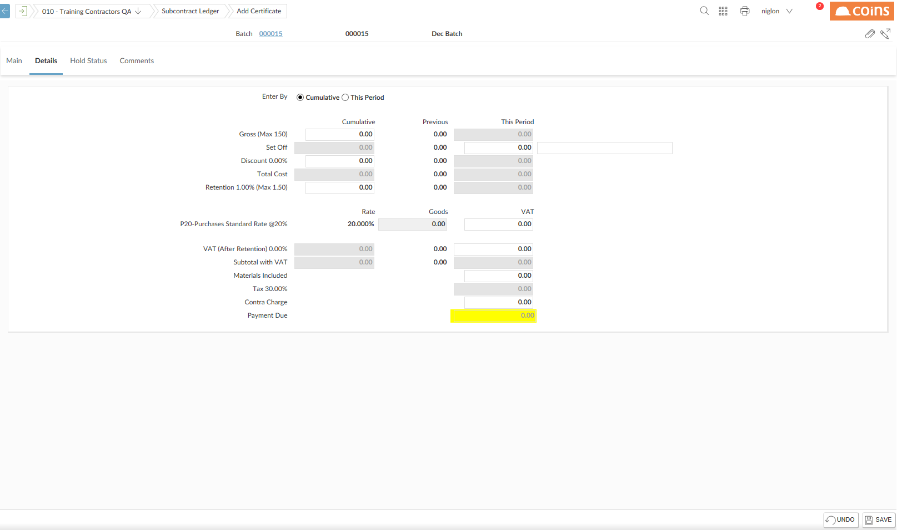
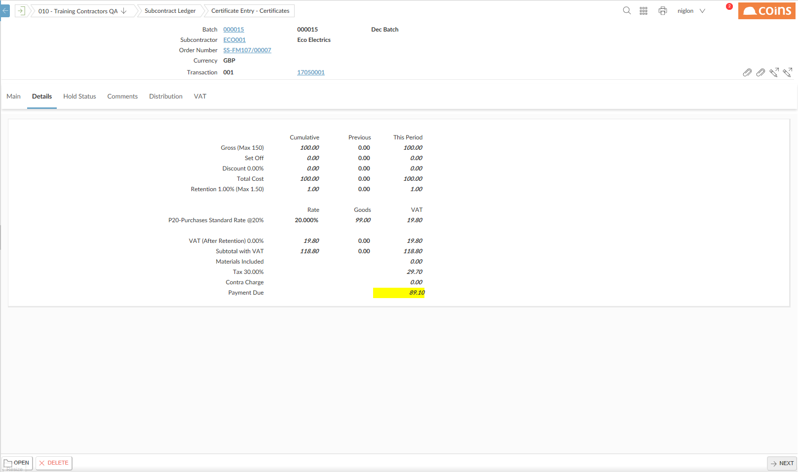
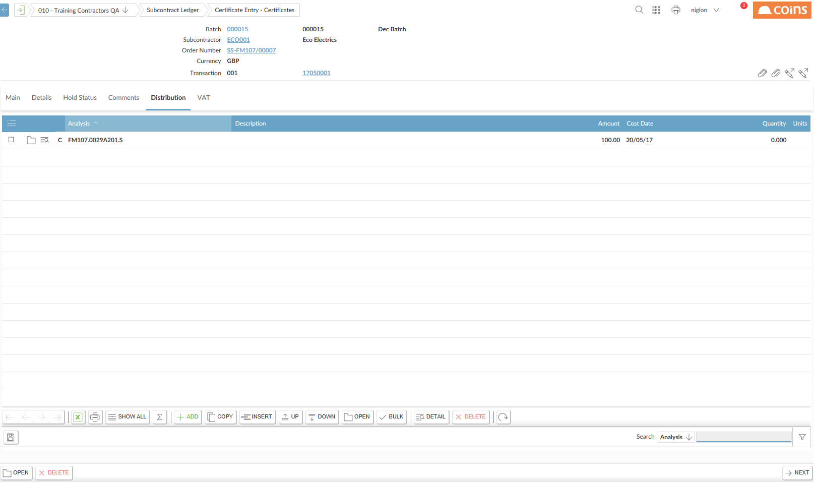
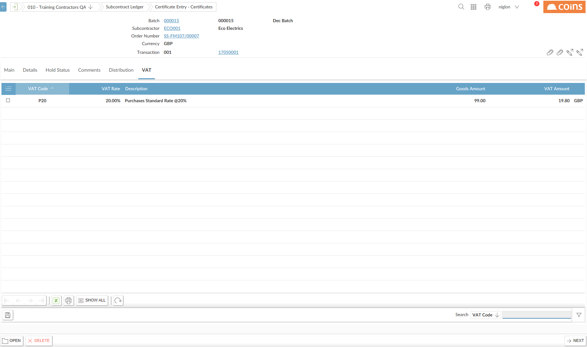

To enter Subcontractor Certificates go to Subcontract Ledger > Certificates > Input Certificates

Click

Complete the Batch Header details and click

Click

|
Field |
Description |
|---|---|
| Order Number |
The order number of the subcontract. To select the subcontract, either:
|
| Unlabelled field | Displays a description of the subcontract |
| Contract Number | The contract (and phase, if appropriate). |
| .Unlabelled field | Displays the name of the contract (for screens where the contract code is updatable this will be shown after you enter the contract code). |
| Subcontractor Account | Account code for the Subcontractor |
| Unlabelled field | The subcontractor's name. |
| Sequence |
The subcontract sequence. The sequence code can be used to distinguish subcontracts where the same subcontractor does separately measured work on the same contract. It could be a sequential number, or a work package code or trade abbreviation. |
| Zero Movement TP | Indicates zero movement for the period. |
Click

Fill in the fields in the Main tab.
|
Field |
Description |
|---|---|
| Claim Received Date | Date the subcontractor claim was received. |
| Certificate Date | The date when the work was certified. This date is used for payment selection. |
| Valuation Date | The date the work was valued. This is also the cost-effective date for costing purposes. |
| Due Date | The date when payment is due. |
| VAT |
The VAT code for this payment. This defaults from the subcontract record. If the subcontractor is registered for VAT, you can distribute VAT to multiple VAT codes -- set this to Multiple VAT Lines. |
| Certificate Number | The reference for the certificate. This can be any text, but if the previous certificate reference was a number, |
| QS Reference | The quantity surveyor's reference. |
| Subcontractor Reference | The subcontractor reference, if there is one (for example, an application reference). For invoicing subcontractors, this would normally be the invoice number. |
| Status |
The status of this subcontract. Active = Normal transactions can be entered. |
| Description | A brief description of the subcontract (this defaults from the subcontract record). |
| Zero Movement TP | Indicates zero movement for the period. |
| Close Order when Certificate exceeds Order value |
Whether to close the order if the certificate value exceeds the order value. Ticked = If the certificate value exceeds the order value, when you save the certificate Unticked = |
On the Details tab, enter the certificate values.

Depending on how the Certificate Definition has been set up, you can move into the This Period column, for example, to make a 'this period' payment on the gross certified line. To move between the This Period and Cumulative columns, use the radio buttons at the top of the tab.
The certificate type used for this subcontract determines the layout of the certificate entry frame. Some fields may not be available for input. This is governed by the certificate definition.As you enter values,
NOTES
If
If you override a value that is calculated as a percentage of a cumulative amount, such as discount or retention, bear in mind that the next payment will still be calculated based on the full cumulative amount.
For example, if you have held retention at 5% of a gross certified amount
Some values, such as
Some lines may be set up to allow you to enter text alongside the value. The text can be printed with this line on the payment certificate, for example, to put an invoice number against contras.
Click

When you have completed the certificate entry screen there is costing tab which can be used to assign the cost to a different analysis code or to break costing across two or more codes.


Because Subcontractor Certificate transactions are calculated cumulatively, if you want to cancel a transaction, you must also cancel any other transactions that were entered after it.
For example, if you have entered transactions 14 and 15, and want to cancel transaction 14, you must first cancel transaction 15, then cancel transaction 14.
To post certificates select the batch from the input screen and choose Post Batches from the Choose Action menu.
Subcontractor certificates are printed using a configurable form. There are a number of selection criteria including a